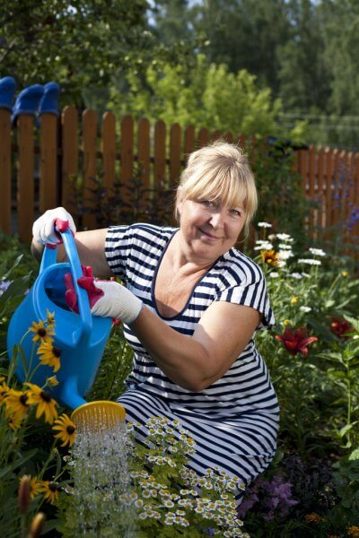
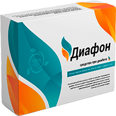

Добрый день! Меня зовут Алла Викторовна Божко, мне 61 год. Я работаю главным технологом по контролю качества на кондитерской фабрике, у меня двое детей и чудесный внук (и внучка на подходе). Считаю свою жизнь по-настоящему радостной и светлой! Но так было не всегда – только снижение уровня сахара и усердная борьба за свое здоровье позволила мне взглянуть на неё по-другому.
В таких случаях принято начинать с истории болезни… Ну что ж, я заболела сахарным диабетом в 56 лет. Самое забавное, что, хотя я работаю на кондитерской фабрике, к сладкому всегда была очень равнодушна, это передалось и моим детям – тоже всю жизнь радовались пюрешке с соленым огурцом больше, чем торту или пирожному. Вместо сладкого я всегда обожала колбаски, сосиски c кетчупом (помнится, в голодные 90-е впервые попробовала экзотический «хот дог» - и влюбилась в него навсегда), а уж если это копченое или, например, курица гриль... Мы даже дома установили свой аэрогриль, и уж тут-то я вовсю разошлась – то рыбу запеку, то птицу, словом, что ни день, то праздничный ужин.
Конечно, я начала набирать вес, но это меня не особенно беспокоило, тем более, что муж говорил, что у женщины должен быть хороший аппетит. В остальном у меня все было нормально, не курила, алкоголем не злоупотребляла…

Подробностей рассказывать не буду, но, думаю, это знакомо многим больным сахарным диабетом. Сначала начинаешь уставать сверх всякой меры, но списываешь это на стрессы, работу, возраст, в конце концов. Ну, голова кружится, ну, спать всё время хочется, сейчас и экология, и иммунитет слабый, и что хочешь.
Испугалась я, когда вес начал сам по себе уходить, безо всяких усилий с моей стороны. Сначала, конечно, порадовалась тому, что вновь влезаю в старые джинсы, а потом поняла, что это как-то странно… Начала много пить и много бегать в туалет. После праздников взяла больничный и пошла к доктору. Терапевт послал меня к эндокринологу, я сдала все анализы – и узнала, что у меня сахарный диабет. 2 степень, не зависимы от инсулина. Врач многозначительно сказал, что нельзя предсказать, как будет развиваться болезнь.
Мой привычный мир рухнул. Еще вчера все еще было нормально, а сегодня нужно полностью менять свою жизнь, чтобы оставаться более-менее в порядке. Мне было невероятно тяжело принять то, что изменения настали и от них никуда не деться.
Бороться с диабетом – это в первую очередь бороться с собой!
Моя борьба началась с традиционных препаратов для контроля уровня сахара, изменения диеты, попыток заниматься гимнастикой… У меня получалось очень средне. В основном из-за того, что я очень себя жалела, мне казалось, что я прямо физически не могу встать и заняться каким-то спортом, даже простые повседневные дела казались мученической ношей! И прежде любимая работа тоже радости не доставляла.
Весь мой мир крутился вокруг показателей тест-полосок. Если сахар хотя бы чуть ближе к норме – я более-менее могла что-то делать, если повышенный – все, депрессия до конца дня. Я постоянно его перепроверяла, будто от проверок что-то наладиться могло. И больничные следовали один за другим.
Я думаю, многие прошли абсолютно через то же самое, да ещё с осложнениями, например, диабетическими язвами или ухудшением зрения…Но сейчас важно другое - что в итоге я получила отличный результат от своей борьбы с диабетом! Еще недавно это казалось совершенно нереальным, но такое средство все-таки есть.
Про Диафон я услышала случайно – стояла, умирая, в очереди в поликлинике и услышала, как две женщины обсуждают, что мать одной из них, тоже диабетик, стабилизировала уровень сахара и чувствует себя в свои 85 лет просто отлично, чуть ли не одна несколько сток картошки на даче высадила, целый огород и одна без помощи со всем справляется. Мне было очень неловко, но я подошла к ним, извинилась и спросила, что за средство. Вот тогда и узнала про Диафон.
Это не лекарство в привычном, «химическом» смысле этого слова, а натуральное средство без вреда для здоровья. Подобных я не видела. Это большая банка с порционными пакетиками. За счет смешения редких компонентов средство помогает организму усвоению инсулина, стабилизирует уровень глюкозы - можно сказать оно воздействует на причину, а не только снимает симптомы.
Плавно, но уверенно уровень сахара приходил в норму. С каждой проверкой показатели становились все лучше. Через 2 недели я специально пропустила пару приемов, чтобы проверить, что получится. Сахар находился в границах нормы! Да, ближе к верхней, но это нормально!
Впервые за долгое время я засыпала вечером с улыбкой, а не тревогой. У меня стали появляться силы. Даже цвет лица лучше стал.
Пила я Диафон как было указано в инструкции. Результаты были уже на первой неделе. Я не стала расслабляться раньше времени и прошла курс полностью. Полный курс Диафон я прохожу для профилактики дважды в год, уже третий год подряд. На всех анализах сахар в порядке, тьфу-тьфу-тьфу.
Поэтому я могу с чистой совестью сказать: самое главное не унывать и использовать любые методы в борьбе с этим недугом. У Диафон существует официальный сайт, вот ССЫЛКА НА САЙТ. Первый раз было страшно, чтоб не “кинули”. Все страхи прошли, когда узнала, что деньги я отдам только после того, как получу Диафон на руки.

Я нечасто пишу. На эту статью я потратила 3 дня, еще и дочку попросила проверить, чтоб ошибок не было. Все это потому, что я очень хочу своим опытом помочь людям, которые столкнулись с такой же проблемой, которая меняет жизнь навсегда.
Я не хочу, чтоб моя статья была похожей на рекламу, потому не буду говорить, что Диафон - это панацея, которая поможет любому. Но я знаю точно: мне он помог, а потому может помочь кому-то ещё.
И главное - не сдавайтесь. Ищите и находите. Мы поборем проблемы, которые нам посылает жизнь. Даже если кто-то рядом разочаровался и опустил руки - вы будьте сильнее. Верьте в себя, в родных, которые нас поддержат, и старайтесь радоваться каждому дню.
Испытай удачу!
Нажми на колесо! Попробуй получить скидку на
Диафон и забрать его за
Эта акция происходит с
до
Они уже выиграли скидку, сможете и Вы тоже!
Алексей Дегтярев
Выиграл скидку в 40%
Иван Пантелеев
Выиграл скидку в 95%
Людмила Коваленко
Выиграла скидку в 30%
Анна Яшина
Выиграла скидку в 65%


СПИН
Поздравляю!
Вы можете забрать Диафон
бесплатно!
OK
Комментарии:

Эльвира, все будет хорошо!
А автору большое спасибо за публикацию! Диафон приобрела неделю назад и пье его по инструкции, сахар упал до 4,8 после еды и 3,2 натощак!